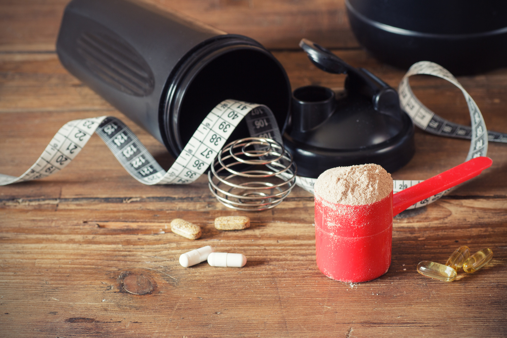
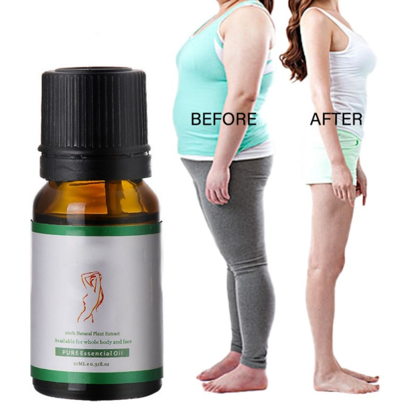

Ranking the best weight loss pills of 2021 - BodyNutrition
2020.12.07 12:17
Skip to content Skip to primary sidebar
Additional menu
BodyNutrition
Find the best for your body
Main navigation
TeamRanking the best weight loss pills of 2021
Last Updated: July 29, 2020
Fact Checked
Fact checked by Natalie Butler RDN, LD - Written by John Davis
Facebook Twitter
When diet and exercise aren’t enough, a weight loss pill can help you make up the difference between where your weight is and where you want it to be.
Weight loss pills, like many fat burners or thermogenics, work in a variety of ways; some increase your body’s baseline metabolic rate, others fill you up and tamp down on your feelings of hunger, so you consume less food, while others block or slow the absorption of the food you do eat.
It’s a complicated series of mechanisms that govern how your body gains or loses weight.
Fortunately for you, we’ve looked at the best weight loss pills on the market and ranked them according to how effective they’ll be for you.
Research
Rankings Category winners Who should buy weight loss pills? How we ranked Benefits Side effects Recommended dosage FAQ Related articles RecapRankings
1. LeanBean
Click here for the lowest price
LeanBean is the trendiest natural weight loss pill for women.
A hit with bodybuilders and fitness models, the fat-melting pills are a great “bonus” to a healthy lifestyle.
LeanBean has a formula designed to control diet (suppressant) while accelerating metabolism as well. The result is faster weight loss allowing for increased fat burning all over the body. No harmful additives. Vegan.
How it works
Each serving of Leanbean is engineered with garcinia cambogia, green tea, green coffee, turmeric, cayenne pepper, konjac, and chromium , a powerful lineup of appetite suppressing and fat-burning ingredients.
The result: the most powerful natural weight loss supplement of 2020 a nd powerful testimonials like these:
Benefits:
1) LeanBean helps you overcome food cravings (appetite suppressant)
2) LeanBean speeds up your metabolism (melts more fat)
(Tip: choose the 3-month pack so you can save money and get a month free)
Click here for the lowest price
2. PhenQ
Click here for the lowest price
The best option for men.
PhenQ hasn’t been on the market for quite as long as some of the other products on this page. But we love it because it combines a lot of benefits into one bottle, and their formula packs a caffeine punch as well, making a great habit to start your day.
PhenQ is not just a weight loss supplement. It also burns stored fat, blocks fat production, and improves mood and energy levels.
PhenQ packs in some pretty impressive power. Capsimax Powder (which is a blend of capsicum, piperine, caffeine, and niacin), Chromium Picolinate (an essential natural mineral found in some meats and vegetables), caffeine, nopal, and L-Carnitine Furmarate can all be found in this supplement.
This formulation is formidable, scientifically proven, and takes a top spot on our list as an all-in-one weight loss supplement.
3. Performance Lab SPORT Fat Burner
Click here for the lowest price
Performance Lab Fat Burner is a premium thermogenic supplement with a focus on preserving the muscle mass and tone that you’ve worked hard for.
It delivers a potent form of slow-release cayenne pepper, a thermogenic ingredient that encourages the breakdown of fat and increases energy expenditure. It also piles in two muscle-protecting ingredients: HMB and coleus forskohlii.
The rest of Performance Lab Fat Burner’s ingredients include Bioperine, a great ingredient in premium supplements that ensures the ingredients are absorbed, as well as chromium.
It’s also stimulant-free, so you avoid the peaks and crashes of many fat burners – as well as any risk of jittery side effects too.
Natural and vegan-friendly. Even the capsules are made from prebiotic fiber to improve digestive health.
4. Transparent Labs Fat Burner
Click here for the lowest price
Transparent Lab’s fat burner is a no-nonsense thermogenic supplement. It has 9 science-backed ingredients, zero fillers, and no harmful additives.
Its ingredients are centered around several powerful themogenics like Forslean. Thermogenics are ingredients that produce heat in your body by raising your metabolism. In a weight loss supplement, that raised metabolism is what we’re after, as that will help you burn more fat faster. It’s not a magic pill, you still need to pair this with diet and exercise, but what it will do is give you a little extra energy to get through your day and some extra help burning off the pounds.
Transparent Lab’s packs this with other ingredients like L-Tyrosine which are designed to let you get all the energy and fat burning power of the thermogenics without any of the “jitters” that can come from them. It’s a great supplement to any program.
5. Evlution Leanmode
Check price at Amazon
Evlution’s Leanmode is consistently one of the better weight loss pills on the market. It combines strong, effective doses of supplements that work very well together, and has no worrisome ingredients or extraneous additives.
It’s been widely lauded for its effects, and it’s easy to see why: each of the primary ingredients (green tea extract, green coffee bean extract, conjugated linoleic acid,and acetyl-L-carnitine) have loads of scientific evidence behind their efficacy.
6. Old School Labs Vintage Burn
Check price at Amazon
While Vintage Burn focuses on stimulating thermogenic effects, it’s quite an effective overall weight loss pill too. Vintage Burn strikes a nice balance between including a variety of effective weight loss supplements without letting the ingredients list get out of control.
If you’ve heard of it, and it’s effective, there’s a good chance it’s in Vintage Burn. What really sets it apart, though, is the converse of this: ineffective ingredients are pretty much nowhere to be found in this supplement, which is great to see.
7. Alli
Check price at Amazon
While other supplements claim to be pharmacy-grade, Alli literally is it’s an over-the-counter version of a prescription medication that’s been approved for weight loss for several years.
Alli works by blocking the absorption of fat in your gastrointestinal tract. It’s quite effective, and several studies have demonstrated a moderate but consistent amount of weight loss.
The downsides are that it tends to work better with high-fat diets, and it can have some gastrointestinal side effects.
8. Genius Diet Pills
Check price at Amazon
Genius makes a name for itself with innovative and cutting-edge supplements that incorporate new and promising herbal extracts.
Their Genius Diet pills are no exception: the unique combination of the neurotransmitter 5-HTP and the spice saffron promise a totally different pathway to dieting success.
While it’s not well-tested like the more popular supplements, this innovative approach might be worth a shot if the traditional formulations aren’t working for you.
9. Lean PM
Check price at Amazon
While a lot of weight loss pills rely on heavy doses of stimulants like caffeine to keep your metabolism high throughout the day, these leave you high and dry at night.
Lean PM rectifies this by providing a weight loss pill that is focused more on suppressing hunger and improving the quality of your sleep (which, strangely, is related to your ability to lose weight) and less on jacking up your metabolism. It’s a great way to assist another supplement taken during the day.
10. Atrafen
Check price at Amazon
Atrafen, made by Nutratech, includes a lot of the hot weight loss supplements right now, like raspberry ketone, african mango, and apple cider vinegar, but this focus on the most trendy weight loss ingredients makes Atrafen overlook older, more established and more effective ingredients.
If you are willing to gamble on the new, trendy ingredients being more effective, Atrafen might be a good buy, but it’s cutting edge nor firmly scientifically grounded, so it’s hard to give it a ringing endorsement.
11. Dub Nutrition Fat Burner
Check price at Amazon
Dub Nutrition’s Fat Burner talks a big game, but the ingredients don’t really hold up to scrutiny.
It relies too much on a megadose of B vitamins to stimulate the body, and while there is an 1800 mg proprietary blend with several weight loss supplements, there’s no telling whether the high quality ingredients are present in doses high enough to be effective.
Category winners
Best weight loss pill overall: LeanBean
LeanBean is our overall winner thanks to its industry-leading combination of herbal extracts that work together to speed up weight loss. With proven ingredients like green tea extract, green coffee bean extract, and garcinia cambogia, it’s definitely one of the best option on the market right now.
Best weight loss pill for women: LeanBean
LeanBean’s all-natural approach, with just the right amount of fat oxidizers and a wide range of appetite suppressants, is perfect for women who want to tamp down on hunger cravings and accelerate fat oxidation.
Best weight loss pill for men: PhenQ
PhenQ’s combination of chromium, niacin, carnitine, and caffeine helps men keep their fat oxidation rates high and their appetite under control, while also sustaining high energy levels throughout the day. It’s both versatile and effective, making it a great choice for men.
Best weight loss pill for older adults: Performance Lab SPORT Fat Burner
Older adults should dial back on stimulant-heavy ingredients, as they tend to be more sensitive to negative effects from compounds like caffeine or guarana extract. Despite being marketed as a sport-specific fat burner, Performance Lab’s simple and stimulant-free design is great for older adults, too.
Best weight loss pill without stimulants: Performance Lab SPORT Fat Burner
If the caffeine in traditional weight loss pills is keeping you up at night or causing jitters and anxiety, try Performance Lab. Its stimulant-free formulation includes forskolin, HMB, and cayenne pepper extract suppress hunger and burn fat, without the negative effects of caffeine.
Who should buy weight loss pills?
The best weight loss pills fulfill at least one of two functions: either they increase your energy expenditure (through thermogenesis ) or they suppress your appetite.
Since weight loss is a function of burning more calories than your body absorbs, a weight loss pill can tackle one or both of these potential avenues to generate weight loss. Weight loss pills are great for people on a diet, as they are a natural compliment to an exercise and diet-focused weight loss program .
If a more mundane strategy of healthier eating isn’t working for you, a weight loss pill might give your metabolism an extra kick to get in gear, or might help suppress cravings for unhealthy foods that are holding back your weight loss.
Since staying in a state of negative energy balance (and hence continued weight loss) is often only a matter of swinging your net energy balance by a couple hundred calories, even a modest boost from a weight loss pill can turn the tide in your favor.
After achieving weight loss goals, some people continue to take a weight loss pill to keep the weight off. Others opt for a more conservative appetite suppressant or fiber supplement, since a more aggressive weight loss pill can be a bit much if all you are trying to do is stay in energetic balance.
Whether a weight loss pill is right for weight maintenance as well as weight loss depends both on the supplement you choose and your personal physiology. Sometimes, weight loss pills that work very well for losing weight are too potent for mere weight maintenance—though not always.
How we ranked
The range of weight loss supplements that are on the market is staggering—it’s by far the most popular health-related goal promoted by supplement manufacturers. To come up with the best weight loss pills of the year, we had some pretty strict requirements.
First, since weight loss supplements have historically been plagued by adverse side effects, we didn’t rank anything with ingredients with a poor track record when it comes to side effects.
Two of the prime suspects here were bitter orange and synephrine, which are chemical analogues of ephedra, a weight loss supplement that was pulled from the market after side effects including heart arrhythmias occurred. Supplements that contain these ephedra analoges have been linked to similarly dangerous side effects, so this is why products like NatureWise Thermo Boost and PrimaForce SyneBurn didn’t make the list.
Next, we cut anything that relied primarily on caffeine for its weight loss benefits. While caffeine is a pretty solid weight loss supplement all by itself, many lower quality weight loss supplements put in a few token herbal ingredients, then dump in a lot of caffeine and call it a diet pill.
T hese supplements are no better (and oftentimes worse) than just taking a caffeine pill . Since many of the top brands leverage the benefits of caffeine and mitigate its side effects by pairing it with L-theanine or green tea extract , plus providing more advanced weight loss benefits from other supplemental ingredients, we saw no reason to rank anything that was mostly or entirely dependent on caffeine for its benefits.
From the remaining supplements, we looked to see which supplements had key, proven ingredients that have been demonstrated to be effective thermogenics or appetite suppressants in scientific research.
These include some of the cutting-edge compounds and herbal ingredients used for weight loss, like garcinia cambogia, capsaicin, and green coffee bean extract. We kept an eye out for companies that use more sophisticated ingredients like 5-HTP or saffron to alter neurochemistry and, potentially, restore a normal appetite and satiety response.
After identifying the most promising products, we eliminated any that had any excessive binders, fillers, or synthetic coloring agents in keeping with our philosophy of clean, effective, and natural supplements.
Finally, we made sure the best products combined ingredients that suppress appetite alongside different ingredients that increase energy expenditure via thermogenesis to ensure that you get the best possible weight loss results. We’re confident that the ten remaining supplements represent the top weight loss pills on the market right now.
Benefits
Weight loss pills can help you burn more energy than you consume. Though they work through a variety of mechanisms, one thing weight loss pills have in common is tilting the calories in / calories out equation in your favor.
Reducing calories in can come from supplement ingredients that suppress your hunger or reduce the amount of calories you actually absorb. Increasing calories out, which is the mechanism by which most weight loss pills function, can happen by increasing your energy expenditure or your fat oxidation.
Weight loss pills can speed the rate at which you lose weight. One of the more frustrating things about weight loss generally, and weight loss pills in particular, is their relatively slow pace. Even a very effective and well-established weight loss pill can take a while to work.
Alli is the over-the-counter version of orlistat, a formerly prescription-only weight loss medication that became eligible for general public use in 2007 ( 1 ).
The data behind its efficacy is strong; according to a systematic meta-analysis of scientific studies published in 2004 in the American Journal of Clinical Nutrition, a 3×120 mg per day dose of orlistat nearly doubles the likelihood that you’ll achieve what doctors deem “clinically significant” weight loss over the course of a year on the supplement. This amounts to ten percent of your body mass ( 2 ).
Weight loss pills don’t need to have earth-shattering effects to improve your health. According to a study by Gerry Oster and other epidemiology researchers, a sustained 10% weight loss (which you could achieve by taking Alli for two years) would reduce your risk of heart disease and stroke and significantly increase your life expectancy ( 3 ).
A different study by D.J. Goldstein shows that even small amounts of weight loss less than 10% of body mass decrease cholesterol, improve blood sugar levels, reduce blood pressure, and drop blood lipid levels. All of these changes are highly beneficial when it comes to your long term health.
There are four separate methods that a weight loss pill can use to create weight loss. As for how a weight loss pill can help you achieve your weight loss goals, a quality weight loss supplement must target one or more of the mechanisms which affect energy balance.
As described in a scientific review by Robert Saper and colleagues at Harvard Medical School, there are four primary mechanisms that a supplement can manipulate to result in weight loss.
These are increasing metabolic expenditure, increasing satiety (feelings of fullness), blocking the absorption of fat or carbohydrates, and increasing fat oxidation ( 4 ).
One of the reasons that a combined weight loss pill may work better than individual supplements taken alone is that the correct balance of ingredients could target multiple mechanisms at once.
The most obvious example of supplements that increase energy expenditure is thermogenic supplements. These can range from basic and widespread compounds like caffeine, to more esoteric herbal extracts like huperzine A and forskolin.
These supplements activate different biological pathways, but they all lead to the same outcome: increasing your body’s baseline metabolic rate, so you burn more calories per day, even when you are sedentary.
Increasing satiety is the purview of fiber and neurotransmitter-modifying supplements. These can be complex, exotic compounds that tweak your brain chemistry, but they don’t have to be.
Something as simple as a whey protein supplement has been shown to increase satiety, thus decreasing your desire to eat more later in the day and resulting in a lower total energy intake.
As reported in a 2007 article in the Journal of the American College of Nutrition, consumption of whey protein triggers the release of amino acids in the stomach that start a signalling pathway that leads to a feeling of fullness and a disinterest in eating more ( 5 ).
Blocking the absorption of fat and carbohydrates is trickier, but some weight loss pills can do it. Alli (also known as orlistat), mentioned earlier, is a perfect example it blocks the absorption of dietary fat, allowing it to pass through your digestive system without being absorbed into body fat. The upside of this is that you can lose weight even if your diet isn’t what it needs to be.
White kidney bean extract is an example of a carbohydrate absorption blocker: it lessens the fraction of carbs that your body actually absorbs after consuming a carb-rich meal.
The downside of all supplement ingredients in this category is that they are highly dependent on your diet: Alli, for example, isn’t going to be effective if you are on a low fat diet.
Ditto for white kidney bean extract and a low carb diet.The other issue with absorption-blockers is that there can be unintended side effects that result from the unabsorbed nutrients making their way through your digestive tract.
Burning fat directly is perhaps the most ideal way to lose weight. Weight loss pills that are hypothesized to be able to achieve this include raspberry ketone , green coffee bean extract , and especially green tea extract.
In the case of green tea extract , this fat-burning effect has been documented in multiple studies, and according to research published by scientists at the University of Geneva, works especially well when combined with caffeine’s thermogenic effect ( 6 ).
Side effects
The different types of weight loss pill ingredients come with their own drawbacks.
Thermogenics, when used incorrectly, can be dangerous, but high quality supplements won’t use questionable ingredients or dosages.
If a thermogenic is stimulant-based (e.g. caffeine), it may keep you up at night if you take it too late during the day. Satiety-modifiers, on the other hand, are fairly free of adverse effects.
A supplement that blocks carbohydrate or fat absorption can cause gastrointestinal issues like bloating and gas, since the unabsorbed nutrients can be eaten by gut bacteria instead.
Fat oxidizers can suffer some of the same problems as thermogenics, but again, a high-quality weight loss pill will be formulated to avoid this.
Recommended dosage
One of the particular appeals of a weight loss pill is that you, the consumer, don’t have to worry about the exact dosage of each ingredient the nutritionists and food scientists are supposed to take care of that for you.
Low-end weight loss pills may not have the appropriate dosage of their ingredients, but with a top-rated weight loss pill, you can just follow the recommended dosage on the bottle.
FAQ
Q: Are there any weight loss pills that work?
A: Several weight loss pills and weight loss supplement ingredients that you can find in weight loss pills have a proven track record.
When it comes to complete supplements, orlistat (Alli) has a consistent track record in high-quality clinical research, because it was originally developed as a prescription-only diet pill (now you can get it over the counter).
Green tea extract is one of the most consistent and effective weight loss supplements.
The scientific evidence for its efficacy started with research that found that people who drink a lot of green tea tend to be skinnier than people who do not; this led to clinical research that tested green tea extract supplements in double-blind placebo-controlled studies and found that it was an effective way to induce weight loss. It also has an excellent track record for safety.
Caffeine even by itself is known to be an effective weight loss supplement, and might work even better when combined with green coffee bean extract.
There are more experimental ingredients like 5-HTP and saffron which have theoretical benefits, or have been proven effective in animals, but the weight loss pill ingredients listed earlier have a consistent record of success in scientific research.
Q: What is the best over the counter diet pill for belly fat?
A: When it comes to burning belly fat, you want a diet pill that increases thermogenesis by increasing fat oxidation. While you can’t target a specific area of the body with a pill, a fat burning diet pill will decrease your overall body fat content, which includes your belly fat.
With this goal in mind, we like Leanbean due to its combination of powerful fat burners like garcinia cambogia, green tea extract, green coffee bean extract, and cayenne pepper.
Others among our top-ranked weight loss pills are also effective, but Leanbean is our bet for the best over the counter diet pill for belly fat.
Q: What is the best weight loss pill prescribed by doctors?
A: Prescription weight loss pills that you can get from a doctor include Liraglutide, Lorcaserin, bupropion/naltrexone, and orlistat.
While each of these has their respective benefits and side effects, by far the safest and most common appears to be orlistat, because it’s the only one that can be purchased over the counter as well as with a prescription.
While orlistat (which is sold commercially as Xenical or Alli) can be prescribed, it was recently designed an over the counter weight loss pill by the Food and Drug Administration because of its relatively mild side effect profile.
P rescription-only weight loss supplements do work, but have a more complex and sometimes risky side effect profile, meaning you should have a conversation with your doctor about the potential benefits and side effects of a prescription weight loss pill.
Q: What are some medically proven weight loss supplements?
A: In terms of the scientific evidence, the best research supports ingredients like green tea extract, caffeine, and orlistat (Alli).
Green tea extract works by increasing the rate at which fat is oxidized, as well as suppressing feelings of hunger. Caffeine is also a powerful thermogenic, and seems to work even better when combined with either green tea extract or green coffee bean extract.
While the absolute amount of weight that you can lose with orlistat is fairly modest, it is an FDA-approved treatment for weight loss (and in fact used to require a prescription; now you can buy it over the counter).
Orlistat seems to be particularly effective for people who are following a standard American diet which is high in fat, since it blocks the absorption of fat calories. This can significantly reduce the amount of calories your body absorbs, even if your dietary patterns don’t change.
Q: How do weight loss pills work?
A: To create weight loss, a weight loss pill essentially has only two potential avenues of attack. It can either decrease the amount of energy that makes its way into your body, or it can increase your body’s baseline energy expenditure to make sure you burn more calories.
Decreasing energy intake is one way to reduce the amount of calories that your body absorbs; this is the strategy employed by appetite suppressants, and even supplements as simple as psyllium husk fiber. These ingredients make you feel more full, or less hungry, and thus less likely to eat too much food.
Other supplements, like orlistat or a carb blocker , actually reduce the absorption of certain macro ingredients after you consume them. Orlistat (Alli) blocks the absorption of fat, while a carb blocker, as the name suggests, blocks the absorption of carbohydrates.
These ingredients have the interesting property of generating weight loss even if you eat exactly the same amount of food—your body just absorbs less of the calories.
Finally, thermogenics work by increasing your body’s energy expenditure. Often, this involves directly up-regulating the oxidation of fat molecules; this is what green tea extract and green coffee bean extract do. The best weight loss pills combine these strategies to maximize weight loss.
Q: How can you get a prescription for weight loss pills?
A: Among the weight loss pills that require a prescription, the prescribing guidelines typically require that you either have (a) a BMI over 30, which makes you medically obese, or (b) have a BMI of at least 27 and have at least one health condition linked to being overweight.
This might be metabolic syndrome, type two diabetes, fatty liver disease, or other chronic health conditions. The National Heart, Lung, and Blood Institute offers a free online tool ( 7 ) to calculate your BMI from your height and weight.
If you meet one of these two requirements, you can talk with your doctor about getting a prescription for one of the prescription-only weight loss pills.
Q: Which weight loss pills are safe?
A: If you are looking for a weight loss pill with a record for safety, opt for ingredients that come from natural foods that are consumed on a regular basis.
Green tea extract is a perfect example: people drink green tea (often in quite high amounts) on a regular basis, and it only seems to be associated with health benefits, not side effects. Green coffee bean extract also seems to be quite safe, which makes sense given its roots in coffee beans.
More aggressive weight loss pills that use a lot of caffeine, or a wide range of cutting-edge herbal ingredients, may not be as safe; stick to these tried and proven weight loss supplements with a good safety record.
Related articles
Diet pills for women Appetite suppressant Thermogenics Natural weight loss supplements Weight loss programRecap
A weight loss pill can give you the boost you need to achieve your weight loss goals.
Though the various ingredients you might find in a weight loss pill work through different mechanisms, the ultimate goal is the same: by decreasing the energy going into your body, or increasing your body’s energy expenditure, you’ll be on track to lose more weight in less time.
A top-rated weight loss pill can modulate your appetite, making you less inclined to overeat, and at the same time, increase your body’s rate of energy expenditure.
This thermogenic effect helps you burn more calories, which combines your decreased energy intake, may create a better weight loss effect than you would have achieved with a diet alone.
For BodyNutrition‘s #1 weight loss pill recommendation, click here .
Primary Sidebar
Fact checked by Natalie Butler RDN, LD - Written by John Davis
Categories
Data Lab Food Rankings Weight Loss Infographic: Eating Under Quarantine
Macro Calculator
© Copyright 2013-2020 BodyNutrition.org · All Rights Reserved. Made in USA.
Advertiser Disclosure: BodyNutrition.org has an affiliate relationship with some offers on this page & is a participant in the Amazon Services LLC Associates Program. Amazon and the Amazon logo are trademarks of Amazon.com, Inc., or its affiliates. All rankings & reviews are based on our research-backed analysis.
Privacy · Jobs · How we rank · Contact
· ·
Although product recommendations are only our opinions, this research-backed page has been fact-checked and reviewed by a certified nutritionalist or health specialist.
- Weight Loss? Easy! The Best Supplements to Keep Fit ...
- 12 Popular Weight Loss Pills and Supplements Reviewed
- 13 best Patanjali Products for weight loss (With Price)
- Weight Loss: Buy Weight Loss Products Online At Best ...
- Amazon.com: Weight Loss: Health & Household: Supplements ...
- Shark Tank Weight Loss Products 2020: What's Real and What ...
- Top 10 Weight Loss Products On Amazon (Of ALL TIME ...
- Dietary supplements for weight loss - Mayo Clinic
- 11 Supplements and Herbs for Weight Loss Explained - WebMD
- 10 BEST Weight-Loss Products That Actually Work | TDE
- Weight Loss? Easy! The Best Supplements to Keep Fit ...
A safe and effective way to lose weight is always going to be in demand. This is a guide to the various weight loss products that have been featured on Shark Tank. As always, our goal is for you to make informed and safe choices when buying health products.
- 12 Popular Weight Loss Pills and Supplements Reviewed
TruVision Health Weight Loss: Order TruVision weight loss combo. TruVision Health trufix and trucontrol sample. Buy TruVision. Lose avg. 4-7 lbs in the 1st week. New Truvy products.
- 13 best Patanjali Products for weight loss (With Price)
2019 Best Weight Loss Products. Though I’m still on my weight loss journey and have about another 30 pounds to lose, I am 30 pounds below my max weight of nearly 200 pounds.No, that doesn’t make me a weight loss expert, but I do feel like I know at least a little about what is truly helpful and what is not.Especially for those of us who have problems committing long-term to workout plans ...
- Weight Loss: Buy Weight Loss Products Online At Best ...
Buy Weight Loss Supplements online at Chemist Warehouse and enjoy huge discounts across the entire range. Shop products online or in store today. Exclusive Offers And Big Savings Delivered to your inbox! sign up. Required field. Invalid email address. Please try again. There was an issue. Please reload the page try again.
- Amazon.com: Weight Loss: Health & Household: Supplements ...
The average weight loss in the supplement group was 4.2 pounds (1.9 kilograms). The average weight loss in the placebo group was 0.9 pounds (0.4 kilograms). While these results are intriguing, the fact that the trial was small and lasted only eight weeks means the results can't be reliably generalized to real-world situations.
- Shark Tank Weight Loss Products 2020: What's Real and What ...
The low levels of fat and carbohydrates in the best protein powders makes them one of the best weight loss products that actually work. Dog. Me and my girlfriend recently got a dog. What a great way to get your ass off the couch! Since I care a lot about our dog I feel that I have to get out on long walks, for the dog’s sake.
- Top 10 Weight Loss Products On Amazon (Of ALL TIME ...
There are many different weight loss solutions out there. This includes all sorts of pills, drugs and natural supplements. These are claimed to help you lose weight, or at least make it easier to ...
- Dietary supplements for weight loss - Mayo Clinic
The Best Trader Joe's Products For Weight Loss We know the popular supermarket chain avoids marketing their products, and that may be why countless hidden health gems secretly lurk on TJ's shelves.
- 11 Supplements and Herbs for Weight Loss Explained - WebMD
Since weight loss is a function of burning more calories than your body absorbs, a weight loss pill can tackle one or both of these potential avenues to generate weight loss. Weight loss pills are great for people on a diet, as they are a natural compliment to an exercise and diet-focused weight loss program .
- 10 BEST Weight-Loss Products That Actually Work | TDE
Shop Weight Management. Should you take a weight loss supplement every day? The best way to use weight loss supplements is to take them every day as directed for a short period of time (2-6 weeks). You should only need the extra support of these products when you are looking for that final boost for your fat loss diet.
A safe and effective way to lose weight is always going to be in demand. This is a guide to the various weight loss products that have been featured on Shark Tank. As always, our goal is for you to make informed and safe choices when buying health products.
TruVision Health Weight Loss: Order TruVision weight loss combo. TruVision Health trufix and trucontrol sample. Buy TruVision. Lose avg. 4-7 lbs in the 1st week. New Truvy products.
2019 Best Weight Loss Products. Though I’m still on my weight loss journey and have about another 30 pounds to lose, I am 30 pounds below my max weight of nearly 200 pounds.No, that doesn’t make me a weight loss expert, but I do feel like I know at least a little about what is truly helpful and what is not.Especially for those of us who have problems committing long-term to workout plans ...
Buy Weight Loss Supplements online at Chemist Warehouse and enjoy huge discounts across the entire range. Shop products online or in store today. Exclusive Offers And Big Savings Delivered to your inbox! sign up. Required field. Invalid email address. Please try again. There was an issue. Please reload the page try again.
The average weight loss in the supplement group was 4.2 pounds (1.9 kilograms). The average weight loss in the placebo group was 0.9 pounds (0.4 kilograms). While these results are intriguing, the fact that the trial was small and lasted only eight weeks means the results can't be reliably generalized to real-world situations.
The low levels of fat and carbohydrates in the best protein powders makes them one of the best weight loss products that actually work. Dog. Me and my girlfriend recently got a dog. What a great way to get your ass off the couch! Since I care a lot about our dog I feel that I have to get out on long walks, for the dog’s sake.
There are many different weight loss solutions out there. This includes all sorts of pills, drugs and natural supplements. These are claimed to help you lose weight, or at least make it easier to ...
The Best Trader Joe's Products For Weight Loss We know the popular supermarket chain avoids marketing their products, and that may be why countless hidden health gems secretly lurk on TJ's shelves.
Since weight loss is a function of burning more calories than your body absorbs, a weight loss pill can tackle one or both of these potential avenues to generate weight loss. Weight loss pills are great for people on a diet, as they are a natural compliment to an exercise and diet-focused weight loss program .
Shop Weight Management. Should you take a weight loss supplement every day? The best way to use weight loss supplements is to take them every day as directed for a short period of time (2-6 weeks). You should only need the extra support of these products when you are looking for that final boost for your fat loss diet.
 